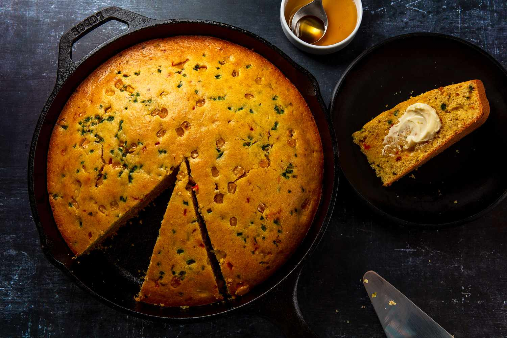

There is no food more American than the classic cornbread. The soft, but firm baked bread made with cornmeal is easily the most important memorabilia of the American past, which is especially associated with the American South. Corn has been a staple ingredient among the Native Americans, who created the first version of what is today known as cornbread. In American culture, cornbread is not regarded as the plain bread replacement, but more as a substantial side dish.
Meal prep time : 25 minutes
Servings : 8-10